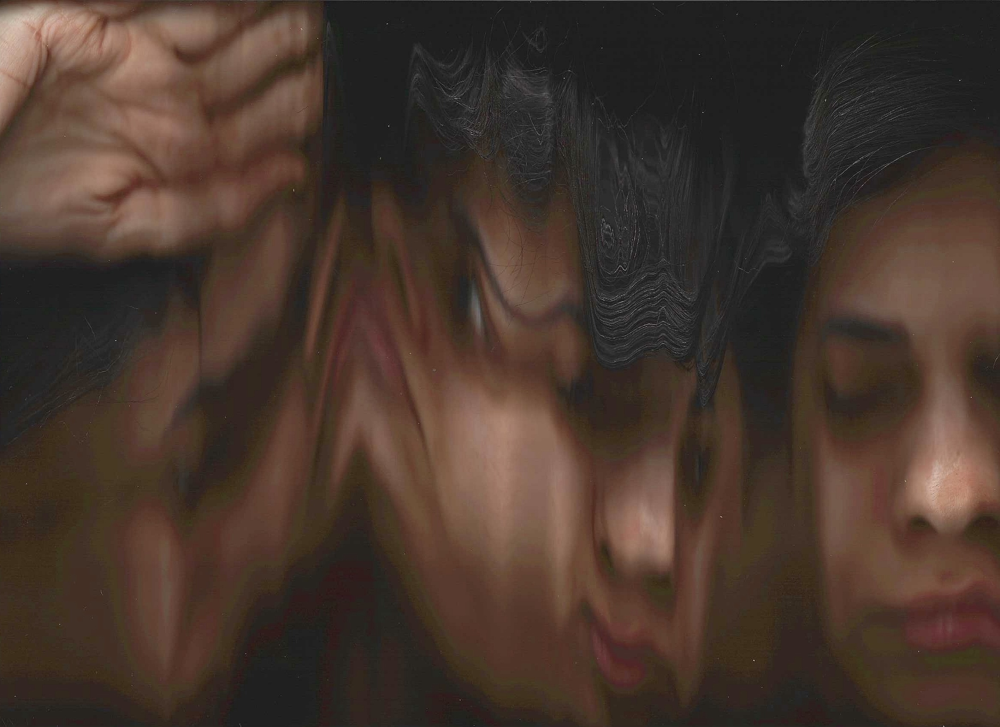
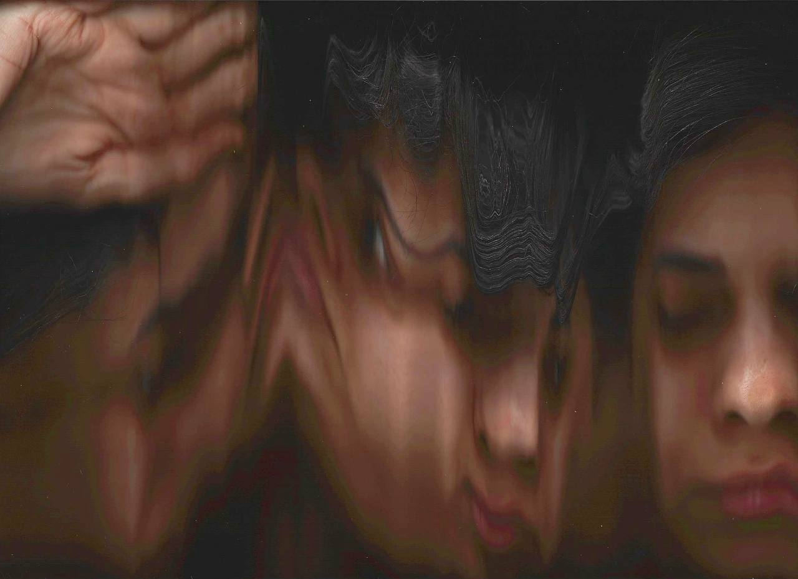
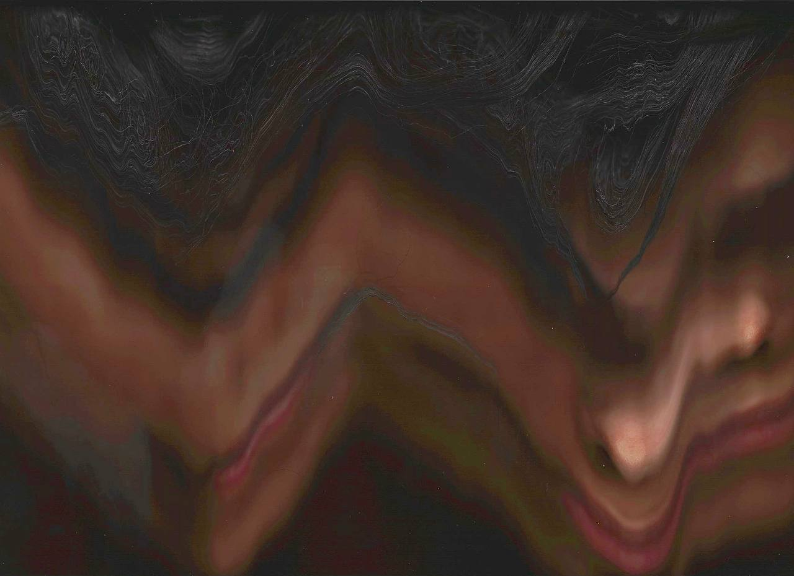
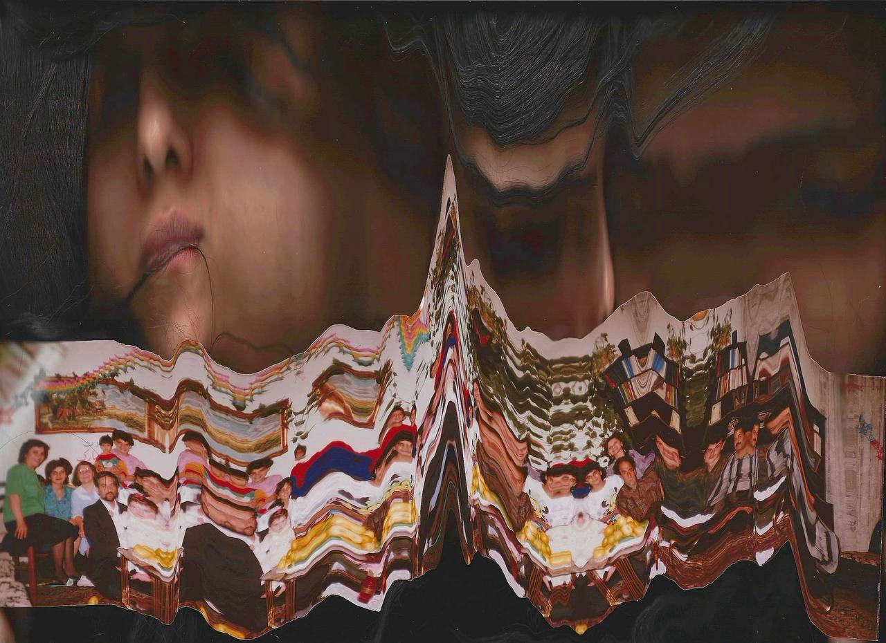
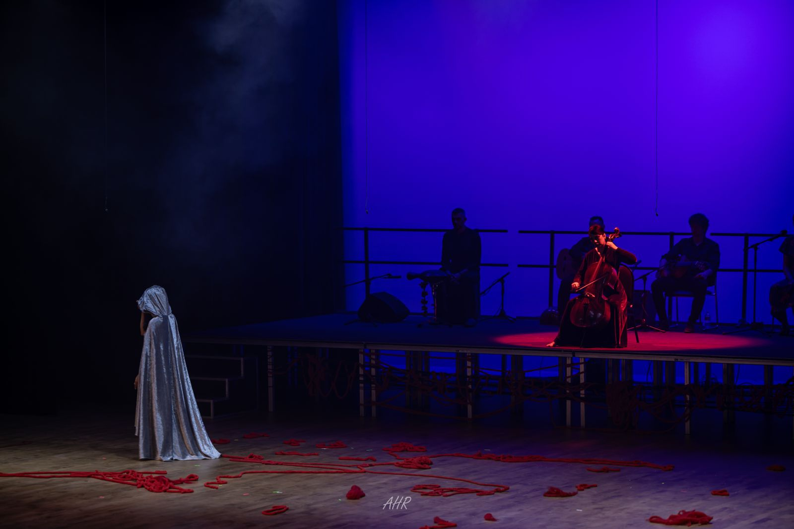
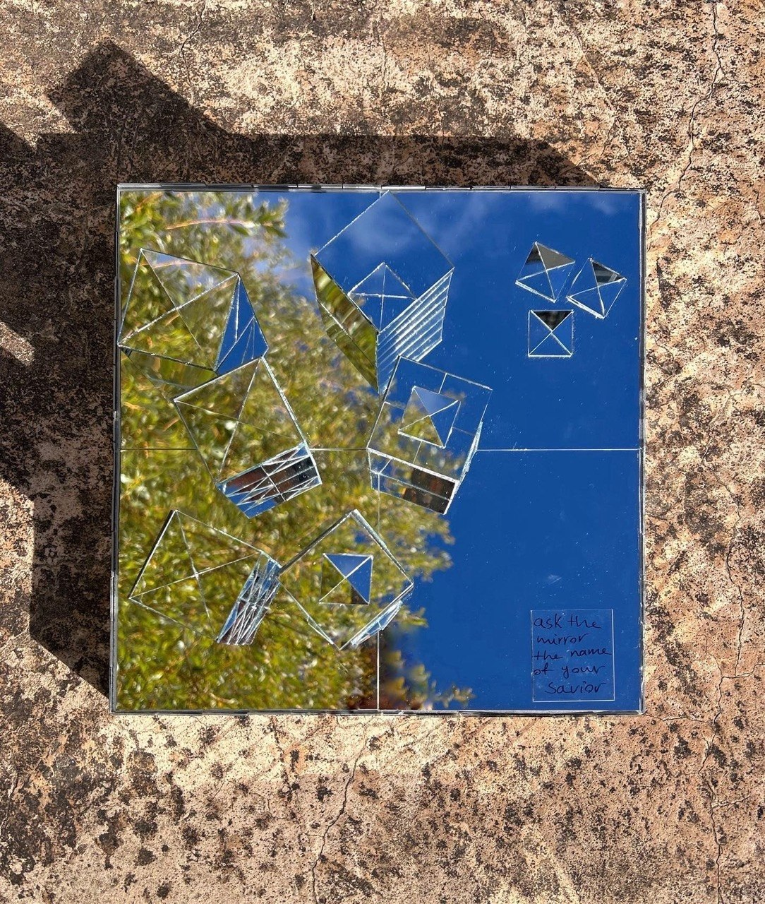
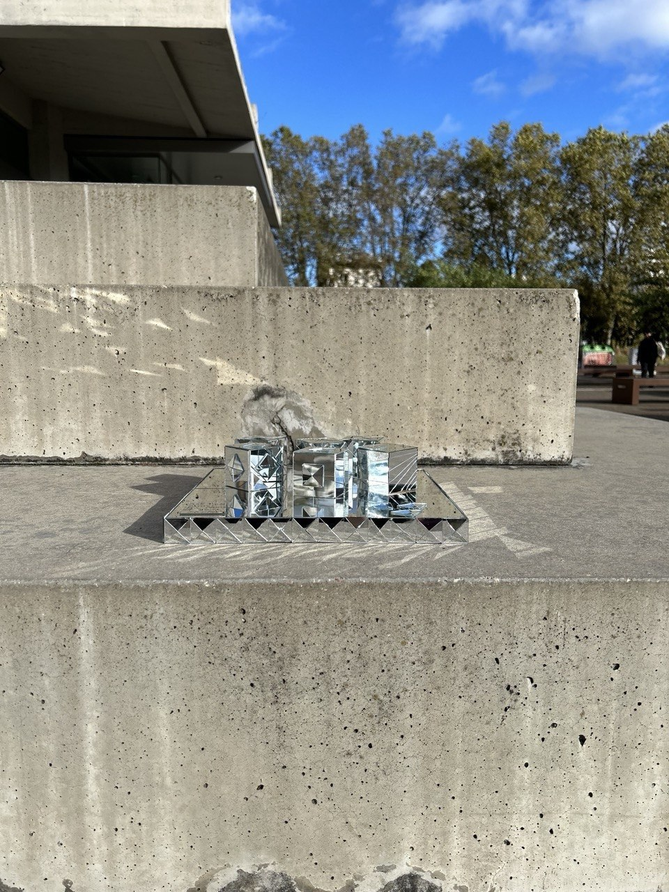
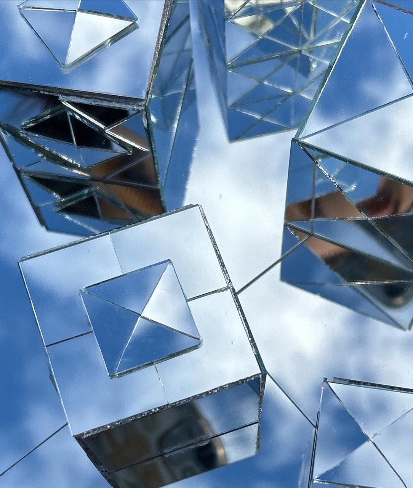
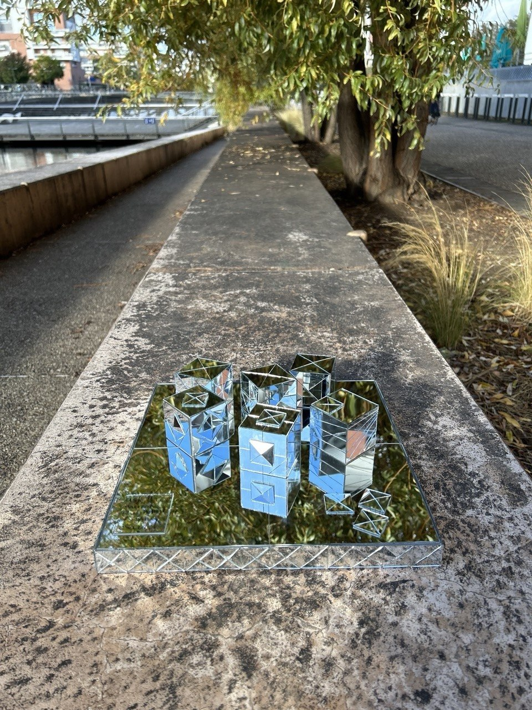

Negin Zadehvakili
Interdisciplinary Artist
01
Bio
Education
- Bachelor of Art in Music Performance
- Fine Arts High School Diploma
02
Artist Statement
My practice emerges from the intersection of sound, image, the body, and memory. Working across performance, installation, photography, sound, and moving image, I explore how lived experience is embodied, remembered, fragmented, and transformed.
As a Middle Eastern artist, my practice is shaped by a cultural and social landscape in which tradition and modernity, collective memory and individual experience, belonging and displacement, often exist in tension. I do not approach this context as a fixed identity or a singular narrative; rather, it forms an underlying layer of my experience and informs the ways I understand the body, memory, language, space, and belonging. The complexities of growing up within and navigating between different cultural, social, and geographic contexts continue to influence the questions I bring into my work.
My relationship with music began in childhood and developed through years of intensive study and live performance. Alongside music, I pursued painting and visual practices, creating a parallel relationship with image and material. My experience with Iranian mirror work (Āineh-kāri) further shaped my understanding of reflection, repetition, fragmentation, and the transformation of space through material. These experiences continue to inform my approach to the body, surface, image, and presence.
I am interested in the body not only as a physical presence, but as a site where experience and memory are stored, carried, and reconstructed. Sound enters my work through rhythm, repetition, duration, silence, and physical presence, while photography, moving image, and installation allow me to examine what can be revealed, concealed, fragmented, or reconstructed. Performance becomes a space in which these elements can coexist and where an intimate experience can open into a broader reflection on contemporary life.
My work is concerned with the tensions between presence and absence, memory and forgetting, intimacy and distance, the personal and the collective. I am particularly interested in the gap between an experience itself and our ability to articulate, communicate, or represent it. This gap—between what is lived, what is remembered, and what can be expressed—often becomes the space from which my works emerge.
I do not begin with a predetermined medium. Instead, I allow each work to develop its own material and form in response to its conceptual and emotional structure. Through this process, sound can become image, the body can become material, memory can become space, and personal experience can be transformed into a visual and performative language.
Projects
Photography
Works in this section are being prepared.
Projects
Image Experiments
Fractured Contact
Vancouver, Canada — 2026
This series is created using a scanner — a device that, rather than capturing a single moment, allows time to pass across the surface of the body. In this process, the image becomes stretched, fragmented, and disrupted, and the body shifts from a recognizable form into an unstable presence.
The distortion of faces, the fragmented repetition of hands, and the collapse of a family image all point to a personal experience of distance — one that is not merely geographical, but rooted in the inability to touch and make contact.
At a time when my family is living within the context of war and I remain physically distant, this work becomes an attempt to reconsider “presence” when access to it is no longer possible.
These images are neither documentary nor direct representations; they are translations of absence.
Each scan records an impossible act of contact.



Projects
Performance
Music Performance
-
2025 · Canada
New Westminster Symphony Orchestra
Conducted by Jin Zhang
British Columbia, Canada
-
2024 · France
Tchakad Ensemble — Ensemble Concert
Villejuif, France
-
2023 · France
Performance featuring an Iranian artist based in Alsace
Mulhouse, France
-
2019 · Finland
WOMEX — World Music Expo
Tampere, Finland
-
2019 · Switzerland
Ensemble Concert
Thun, Switzerland
-
2019 · France
Écran d’Argent Festival
Paris, France
-
2019 · Germany
Ensemble Tour — Berlin, Hamburg & Frankfurt
Germany
-
2019 · Iran
34th International Fajr Music Festival
Abadan & Tehran, Iran
-
2018 · Ukraine
Ensemble Concert
Featuring lead vocalist Vahid Taj
Kyiv, Ukraine
-
2017 · Iran
Ensemble Festival Performance
Featuring lead vocalist Vahid Taj
Tehran, Iran
-
2016 · Iran
Khonyagaran-e Meher Ensemble
-
2016 · Iran
Concert with Mohammad Motamedi
Tehran, Iran
-
2016 · Armenia
Im Hayastan Festival
Yerevan, Armenia
-
2016 · Iran
Khorshid Ensemble
Led by Majid Derakhshani
Tehran, Iran
-
2013 · Iran
Shahoo Ensemble Concert
Tehran, Iran
-
2013 · Iran
Ehsan Khajeh Amiri Concert
Tehran, Iran
-
2013 · Iran
Mozart Classical Quartet Concert
Led by Mahyar Tafreshipour
Tehran, Iran
-
2013 · Iran
Nilper Ensemble — Collaboration 2
Featuring works by Arvo Pärt, Pēteris Vasks and Henryk Górecki
Tehran, Iran
Conceptual Performance
-

September 2025 · Canada
Blood Wedding — Act VI
Federico García Lorca · Directed by Reza Rad
A live cello performance based entirely on improvisation. The sonic material was created in real time in response to the actors’ dialogue, movements, and gestures, often moving beyond melody into sound, texture, timbre, and resonance. The cello functioned as an active performative element rather than conventional musical accompaniment.
Projects
Installation
Ask the Mirror the Name of Your Savior
Strasbourg, France — 2024
The title of this work is borrowed from a poem by Forough Farrokhzad and reflects on self-recognition and confronting one’s own reflection: salvation does not lie outside the individual but emerges through facing oneself.
Mirrors and mirror art have deep roots in the visual and architectural traditions of Iran. In this work, the mirror is not merely a physical material but a conceptual medium that enables reflection and awareness, allowing the individual to encounter themselves as their potential savior.
The piece presents an interpretation of the world map through sharp, faceted mirrored cubes — forms representing continents and territories, constructed spaces that humans inhabit. Their angular and fragmented nature reflects both the artificiality of borders and the multiplicity of perspectives that shape our understanding of the world.
Within this mirrored geography, each surface reflects another, with images overlapping and intersecting, much like the way human decisions and actions continuously influence and reshape one another. The work suggests interconnectedness, where no element exists in isolation and every movement resonates across a wider field.
Light plays a central role, moving across mirrored surfaces, refracting, and extending beyond physical boundaries, illuminating ceilings, floors, and bodies, creating a dynamic, ever-changing environment.
By existing simultaneously in natural and urban settings, the work expands the concept of reflection beyond a visual phenomenon, proposing it as a condition of being — where self, others, and the environment exist in constant and inseparable relation.




Projects
Mixed Media
Works in this section are being prepared.
04
Contact
- Instagram @negin_zadeh_vakili